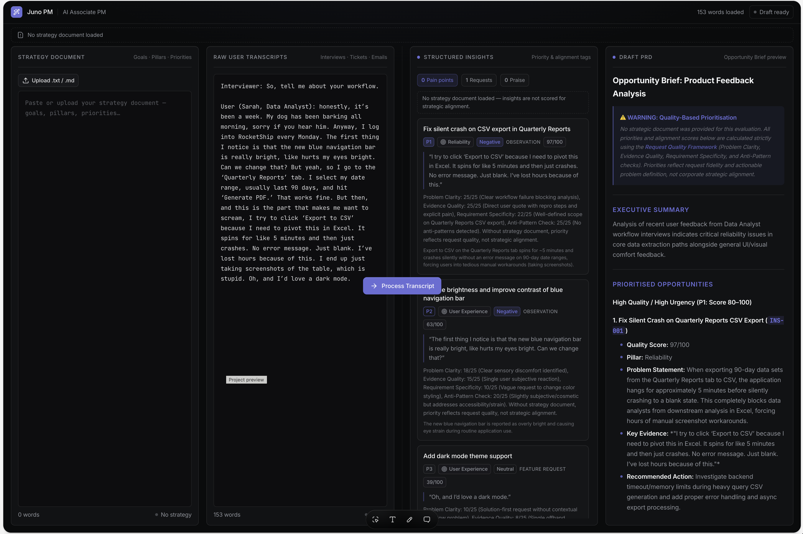
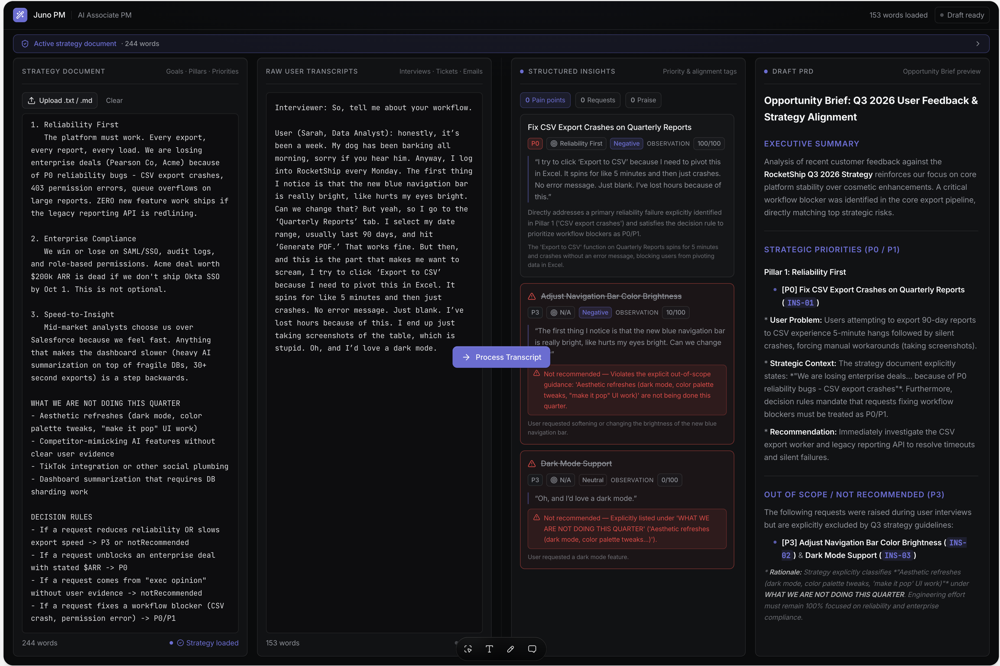

Juno PM, AI Copilot for RocketShip's Product Org
Juno PM turns RocketShip's flood of escalations, tickets and customer calls into a short, ranked, sourced list of what matters, so a PM can decide quickly and defend the call afterwards.
The 6 building blocks
Six modules, six artifacts, one product. The first three build a ranking engine for the weekly review. Module 4 moves it into the thread where the argument starts. Modules 5 and 6 make it safe to ship.
Juno's job as configuration: one job, named sources, nine rules and six refusals, a fixed output schema, and a worked example of the hardest case. Every rule traces to a failure the prototype produced. The prototype itself had no model behind it: byte-identical output on repeated runs, which shaped how everything after it was tested.
→ System prompt:01-prompting/system-prompt.md→ Prototype: ai-pm-synthesis.lovable.appBuild the evidence layer, rent the model. All three options rent a base model, so the decision is where engineering effort goes, and provenance wins over cost. Copilot, because the risk sits in the write action, not the draft. Targets, both derived: review time 2h to 30 min, under 10% of rankings reversed within a week. The scariest risk is laundering opinion into evidence; the mitigation is ranking on distinct customers, never message volume.
→ Decision matrix:02-strategy/decision-matrix.md→ Strategy one-pager: 02-strategy/strategy-one-pager.mdHybrid retrieval: the strategy document is read whole so Juno can refuse, and everything else is chunked by natural unit and retrieved at Top-K 8, p95 under 4 seconds, 6,000 tokens per query. Every rank shows a tag, a source and a quoted clause, or it fails the build. The finding that shaped the PRD: grounding did not change the order, it made refusal possible.
→ AI PRD:03-rag-prd/prd.mdSlack-native, no new dashboard. The first three modules built the ranking engine for the weekly review; this one moved it into the #escalations thread, where the argument starts. Trigger: a P0/P1 tag, or five messages in ten minutes. One reply, edited in place into the shortlist. Every write staged behind Approve, Edit and Reject. Three trust gaps scored, control at 3 of 5 because Juno keeps no memory of rejected items by design.
04-ai-ux/user-flow.md→ Trust-gap mitigations: 04-ai-ux/trust-gaps.md

The gated agent: tools that compose writes and never execute them. Handoff fires on countable conditions, fewer than two independent sources, a contradiction reranking cannot settle, or a single customer at the top, not on a confidence score, because identical inputs move the score between runs. Six tool calls, 45 seconds, then stop. The control panel adds a kill switch with a named holder, cost in tokens per month, fail-closed on provider outage, and monitoring of the approval checkpoint itself.
→ AWSpec:05-agentic-workflows/awspec.md→ Agent Control Panel: 05-agentic-workflows/agent-control-panel.mdThree layers, each with a numeric bar, a cadence and an owner. Five rubric dimensions, 25 observable anchors, pass bar 4.0 of 5. Override rate held to a two-sided band, 10% to 40%, because a copilot nobody corrects is the likeliest failure and the least visible. Hard gates only on failures nobody would notice without the eval: a fabricated citation, an out-of-scope source, a missed handoff. Accuracy is not a bar.
→ Eval stack:06-evals/eval-stack.md→ Human rubric: 06-evals/human-rubric.mdHow I'd ship Juno
The ask, where the work is today, what ships next, what I watch, and what would block a launch.
What I am asking for
#escalations. The estimate is the first number to confirm.Run cost. About 4.7M tokens a month at the ceiling. At $5 per million, under $25 a month; under $75 if the price triples.
Return. Six PM hours a month from the review. Plus roughly 25 reversals avoided a quarter; if one in five meant an engineer started on the wrong item for a week, that is five engineer-weeks back. The value of a P0 caught a day earlier is not priced, because it depends on ARR data Juno is built not to see.
Kill. Reversal rate flat while review time drops. Provenance was never the constraint.
Where Juno is today
The prototype is live at ai-pm-synthesis.lovable.app, grounded in the strategy document. It is a test harness for the reasoning, not the shipping surface.
The agent is a specification. No tool call has run against live Slack, Jira or Notion.
Golden set: 40 cases composed, none written.
Rubric: five dimensions, 25 anchors, no calibration round yet.
Nothing is wired to CI. Closing that gap is the two-sprint ask.
What ships next
Sprint 2, read-only in production. Juno posts the shortlist into
#escalations behind a flag and stages nothing. Measure trigger precision. No write scope until that number holds, because a wrong write costs more than a wrong suggestion.Beyond. Prioritize risks came first because a wrong answer is visible fastest and the corpus is richest. Draft specs earns its place after a quarter inside the override band, since a spec is a larger write than a rank. Synthesize insights last, because nobody argues with its output in a room, so a wrong answer stays wrong longest. Same lens each time: how visible is the failure, how much does the write cost.
What I watch
Weekly: override rate, median time to approval, staged batch expiry, rubric mean per dimension.
Per release: clause fidelity, out-of-scope source ids, golden set regressions, LLM-judge agreement with the last human round.
Monthly: tokens against the 4.7M ceiling, and cost per run against the two hours a week Juno is meant to give back.
What blocks shipping
More than 0
source_id values outside #escalations, #support, ROCKET or the Product workspace.Any item scored 1 on access safety in the latest human round.
Any item scored 1 on handoff correctness.
More than 0 golden set cases newly failing.
Override rate below 10% for a full week. Not a quality failure: it means the approval checkpoint has stopped working, and the other five only hold while it does.
How I keep it safe
Safety. Every write staged, executed only on approval. Threads touching contracts, legal, security or commercial terms cannot be drafted until a human approves.
Reliability. Provider outage fails closed, no silent downgrade. Six tool calls, 45 seconds, abort after two tool errors. A kill switch held by the PM who owns
#escalations and by workspace admins.Reputation. Ranking rules versioned with a named owner and stamped on every shortlist, so any past ranking can be explained.
What I learned
Where it hurt, what clicked, and the moment something changed.